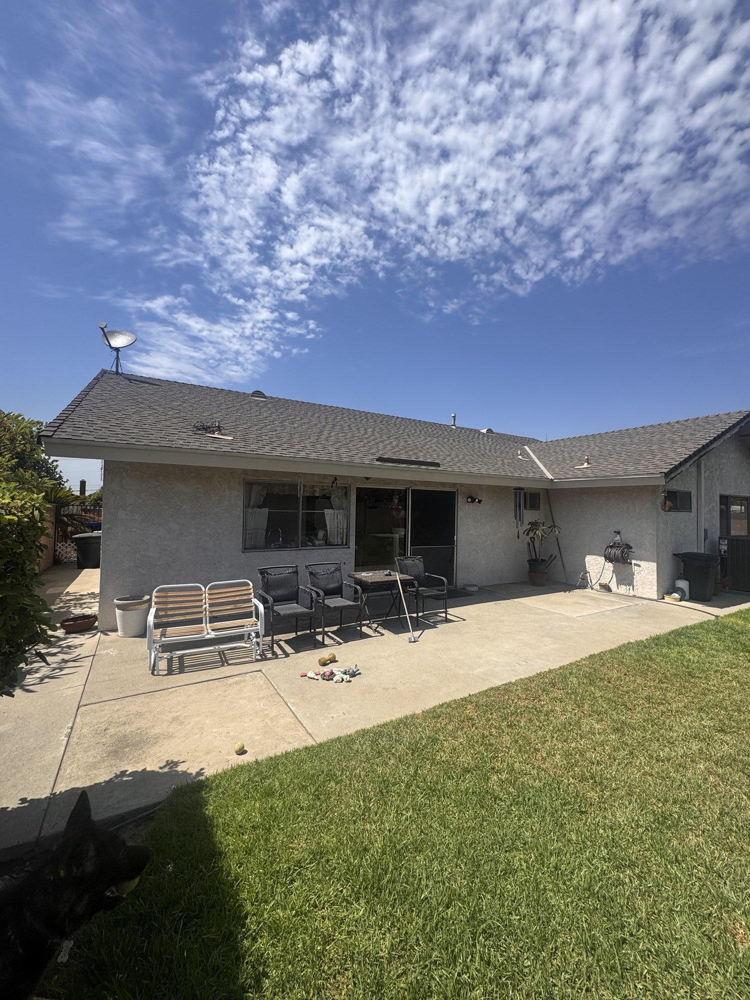
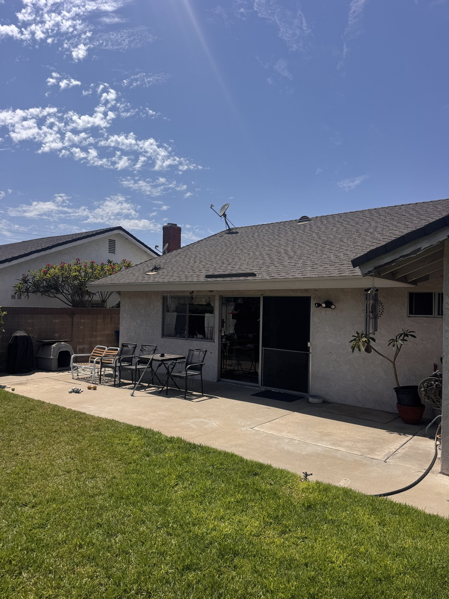
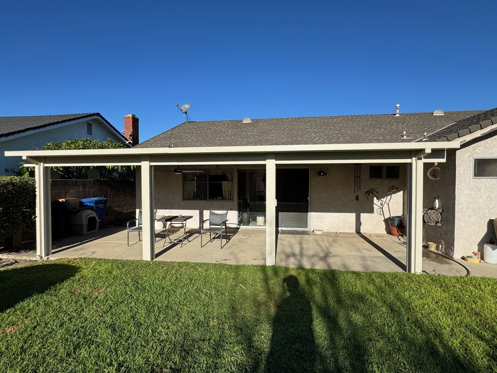
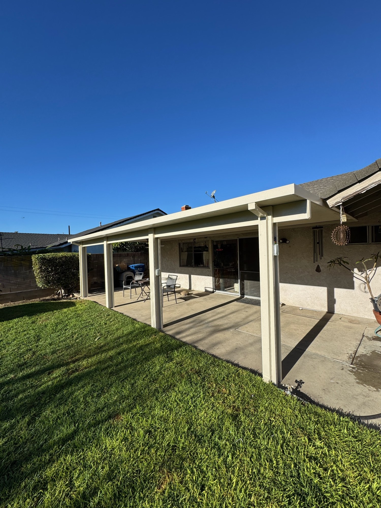
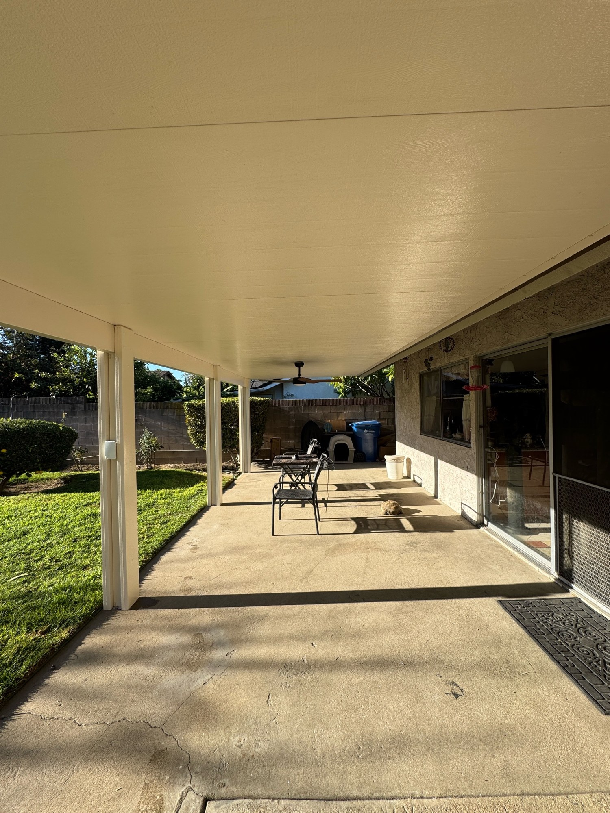

BEFORE
AFTER
BACKYARD MAKEOVER
No shade. No comfort.
A patio too hot to use.
Full sun on the slab, all day long.
WATCH THIS
Now it's all shade.
Solid Alumawood cover.
The look of wood. Never needs paint.
Clean, finished ceiling.
Ceiling fan installed. Built to last.
BEFORE
AFTER
Same yard. New life.
Get your free patio cover estimate
805-889-0869
LIC. 971127